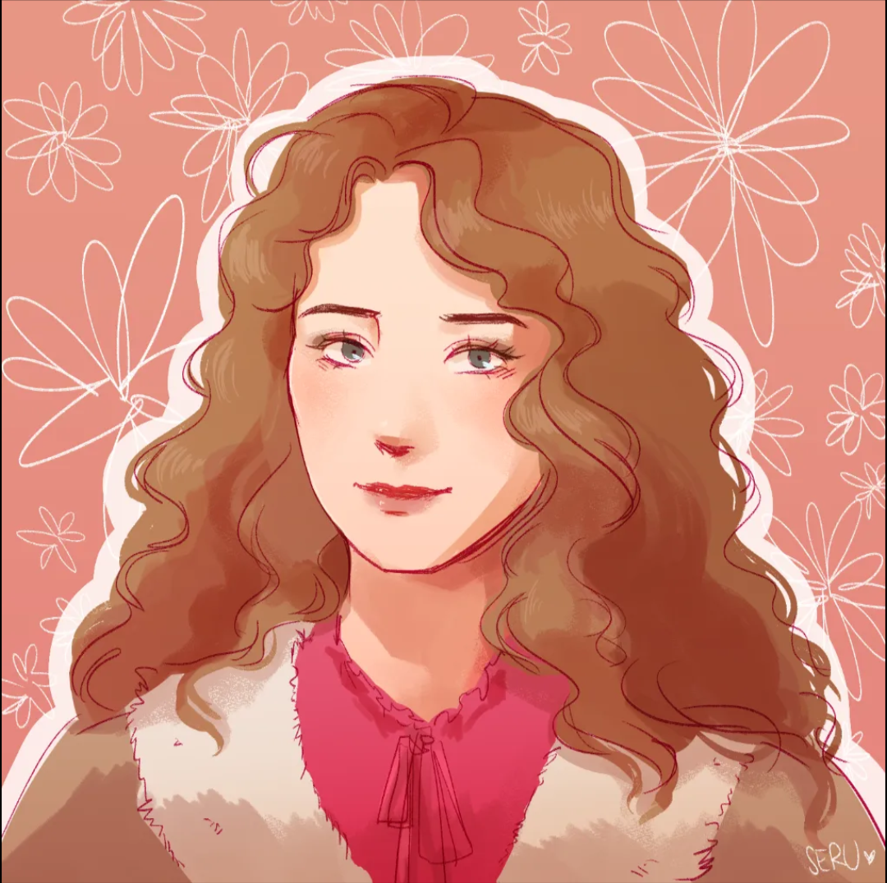
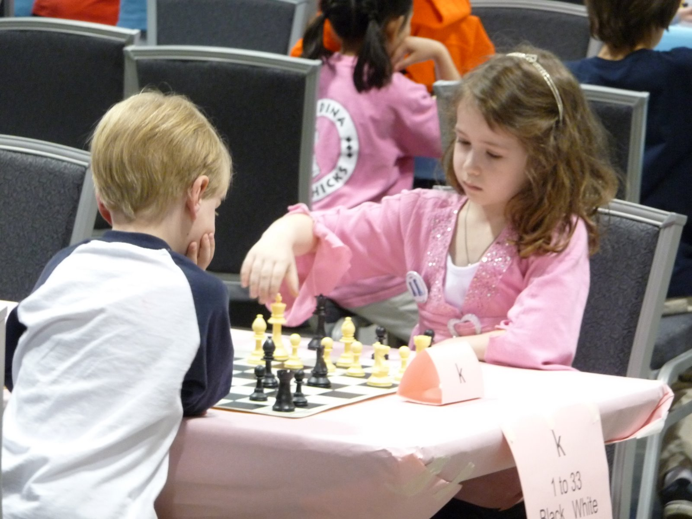
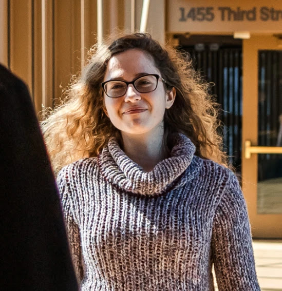

About Me
Welcome! :) I'm Naomi Bashkansky. I care about ensuring Artificial General Intelligence goes well for humanity. I'm a founding researcher at Conduit Intelligence, training thought-to-text models.
I love reading, thinking, and making friends. Reach out if you're in San Francisco!